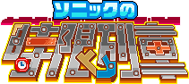
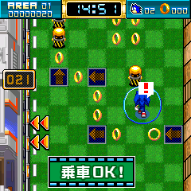
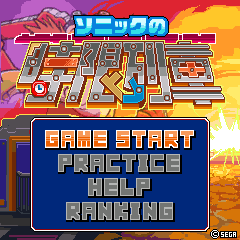
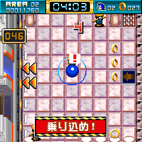
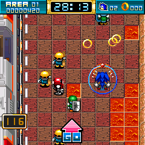
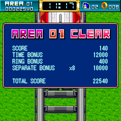

|  |
||
|
■ 先頭車両を目指せ！ ■ 今度のソニックは列車とバトル！ ダッシュ＆スピンを駆使して、エッグマンの待つ先頭車両を目指せ！！ |
||
|
|
|
| ■ どんなゲーム？ |
|  |
列車は「エリア（駅）」に各駅停車するよ。ソニックはこの停車時間中に列車を降り、先頭車両を目指してホーム上を移動することになるんだ。 ホーム上にはエネミーや仕掛けがいっぱいだから注意しよう。 停車時間が０になると、次のエリアに向けて列車が出発してしまうから、乗り遅れてミスにならないよう時間内に乗車しよう！ これを繰り返し最後のエリアまでに先頭車両に乗車すれば１つのゾーンをクリアしたことになるぞ！
|
| ■ モードについて |
|  |
◆ＧＡＭＥ ＳＴＡＲＴ ⇒全７ゾーンを順番にクリアしてゆくモードです。 一度クリアしたゾーンはいつでもプレイできるようになります。 ◆ＰＲＡＣＴＩＣＥ ◆ＨＥＬＰ ◆ＲＡＮＫＩＮＧ |
■ 操作方法 |
|  |
●前進モード：上キー一回押し ●進行方向切り替え：左右キー ●緊急停止：下キー ●ダッシュ：決定キー（または前進中に上キー） ●スピンダッシュ：ダッシュ中に決定キー・または上キー |
■ リングとダメージ |
 |
エネミーやダメージゾーンにソニックが接触すると、一定時間動けなくなってしまうぞ！ でも最低１個でもリングを持っていれば、リングを失ってしまう代わりにこの硬直時間を軽減することができるんだ。 リングはクリア後のボーナスなどにも影響してくるので集めて置いて損は無いぞ！ |
■ ２つのボーナス |
 |
各エリアの停車時間と相談して、 ●セパレート（切り離し）ボーナス ●タイムボーナス |
<<戻る>>
© SEGA